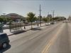

Environment
-
Jefferson High's Green Design Academy makes use of wasted space
9/29/11, 5:45 p.m.
The Green Design Academy at Jefferson High School is on a quest to change the way South L.A. uses its alleys by increasing functionality and making them environmentally friendly.
-
SoLa Food Co-op works to offer healthy options in South Los Angeles
9/28/11, 5:17 p.m.
Residents in South Los Angeles are working on building a food co-op that will provide more options.
-
Sounds of South L.A.: Backyard Barnyards
9/9/11, 11:18 a.m.
Backyards are becoming barnyards as more and more residents try their hand at raising untold numbers of livestock — chickens, roosters, goats, even the occasional pony — between the concrete streets of South Los Angeles.
-
South L.A. shelters and rescue groups grappling with rise in homeless pets

8/24/11, 2:42 p.m.
Rescue groups suspect a rise in the number of homeless pets, and shelter statistics from the past five years confirm suspicions.
-
Next CicLAvia heads south, but not quite into South L.A.
8/23/11, 11:58 a.m.
Lack of funds and issues surrounding Metro crossings postpone a full South L.A. expansion for the next CicLAvia event
-
Buses and shuttles do little to help Vernon Central shoppers
8/16/11, 10:46 a.m.
Many shoppers who find themselves carless in the new economy are finding that help transporting their groceries from store to home is scarce—and it's forcing them to get creative.
-
More bikes: Bike businesses and advocacy on the upswing in South Los Angeles
8/9/11, 4:50 p.m.
A recent surge in Angelinos turning to bicycles is changing South Central's traveling landscape.
-
CABA hosts Central Avenue clean up day

7/21/11, 2:01 p.m.
Business owners and community volunteers join efforts to clean up Central Avenue on Saturday, July 23
-
Trinity Elementary park serves as pilot for other community parks
7/15/11, 1:28 p.m.
Trinity Elementary School is the pilot site for a “greening” development set to happen in eight South Los Angeles schools.
-
A five-year fight: South Central Farms holds an art show for anniversary
6/9/11, 10:50 a.m.
The South Central Farmers Committee will be holding an art show and vigil in remembrance of the five year anniversary of their fight to restore what once was the nation's biggest community garden.
About Us
OnCentral is a site for the neighborhoods around Central Avenue. It's a news site where we not only provide information, but put the power of storytelling in your hands. Sign up and you can share your story or help an existing story grow by adding in your perspective or corrections.
Follow OnCentral


- Most Viewed
- Most Commented